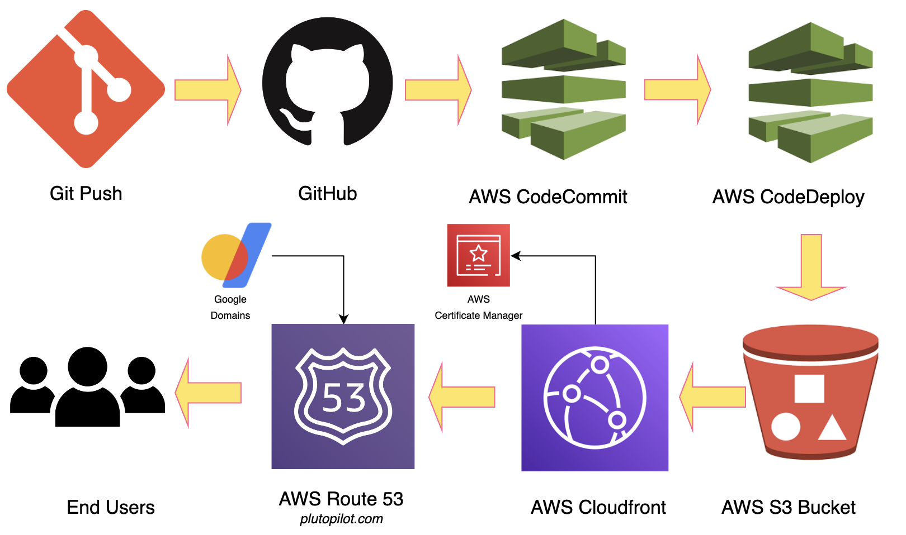

This project showcases my DevOps skills, demonstrating the deployment of a Digital Resume with end-to-end automation with all the necessary modifications to customize it for my CV.
The digital cv is currently hosted on github server, however, For better DNS control, I have purchased the domain Future Host and will managed it using AWS Route 53. I configured a certificate for plutopilot.com with AWS Certificate Manager to ensure compatibility with Route 53.
The website was uploaded to an Amazon S3 bucket, and to automate the deployment process, I set up an Amazon CodePipeline. This pipeline is linked to my forked GitHub repository, triggering updates in the S3 bucket whenever changes are pushed.
To serve the website to users, I utilized AWS CloudFront in front of the S3 bucket. This seamless DevOps flow, from git push to AWS Code Commit and AWS Code Deploy, ultimately updates the Amazon S3 bucket hosting the site.
